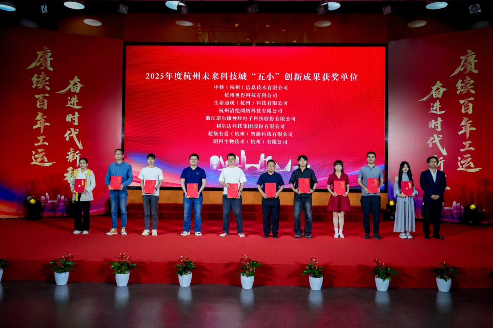
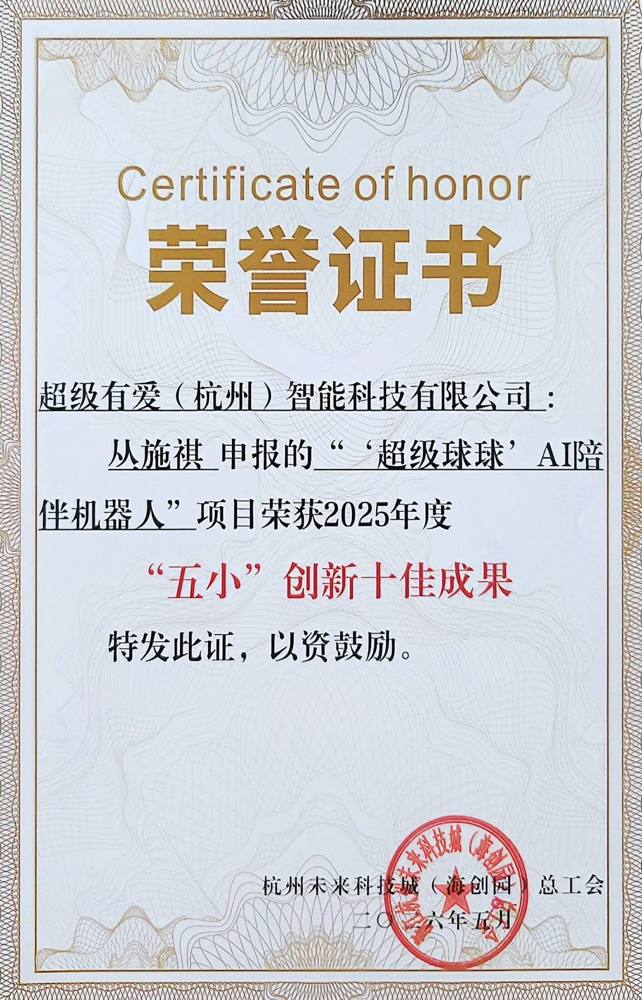
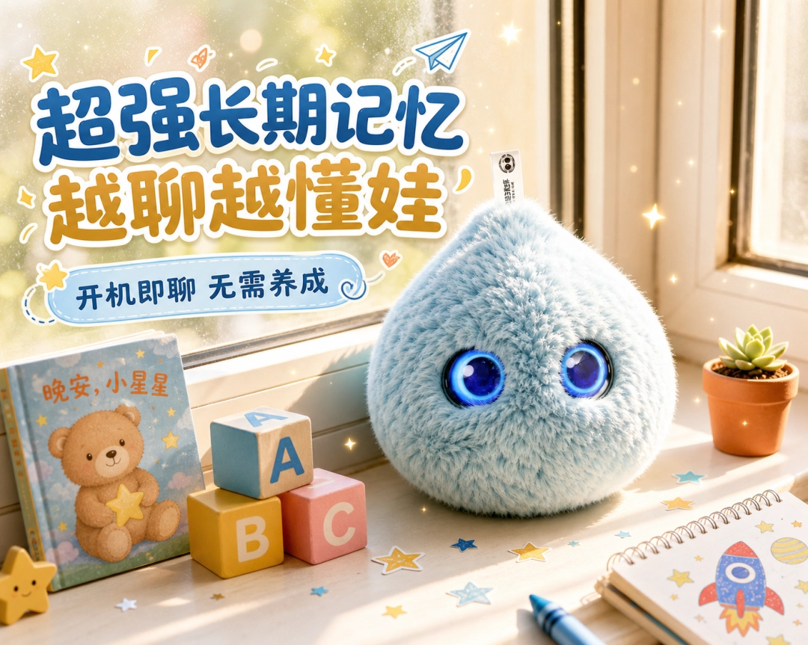
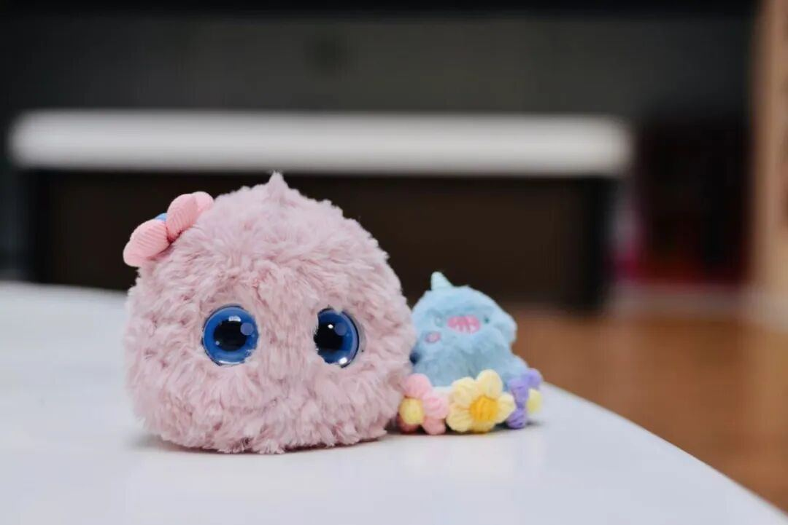

未来科技城 “五⼩” 创新评选，由未来科技城总⼯会牵头开展，聚焦贴近⺠⽣、实⽤性强、具备落地价值的科创成果，是余杭区认可初创企业创新实⼒的重要官⽅荣誉。本次评选围绕 “⼩发明、⼩创造、⼩⾰新、⼩设计、⼩建议”，⿎励企业以轻量化技术创新解决社会刚需。⽽超级球球，正是以AI技术回应⼉童⼼理健康需求的创新实践。
这份荣誉，是对超级球球的⼀次官⽅盖章：它不只是⼀个软萌的陪伴机器⼈，更是⼀个真正能解决孩⼦情绪陪伴痛点的创新成果。

为什么是超级球球？本次获评，充分体现了政府与⾏业对超级有爱在AI情感计算、⼼理健康服务、智能硬件创新领域技术成果与社会价值的⾼度肯定。
作为专为5-12岁孩⼦设计的AI情绪陪伴机器⼈，超级球球以⾃研的有爱AI⼼理模型为核⼼，精准识别孩⼦的情绪，⽤共情对话和情绪疏导，回应成⻓中的孤单与烦恼。从技术研发到落地应⽤，我们始终相信：科技的价值，最终要回归到⼈本⾝。⽽这份荣誉，也让我们更加坚定，要把温暖的陪伴带给更多孩⼦。

感谢⼀路同⾏超级球球的快速落地成⻓，离不开亿极中国全周期孵化赋能。作为项⽬引进培育主体，亿极中国依托跨境科创资源整合优势，为企业提供办公载体、融资辅导、创投资源匹配、赛事申报、政策对接等定制化孵化服务，助⼒项⽬从技术原型⾛向市场化落地。
超级球球曾随亿极中国亮相进博会，获英国驻华贸易副使节盛赞；更是远赴海外登上美国CES国际消费电⼦展舞台，在全球众多科创产品中脱颖⽽出，成为亮眼的⾏业⿊⻢，收获海内外市场的双重认可。
未来，我们也将带着这份认可，继续深耕AI情绪陪伴领域，让更多孩⼦被温柔看⻅、被耐⼼倾听。

